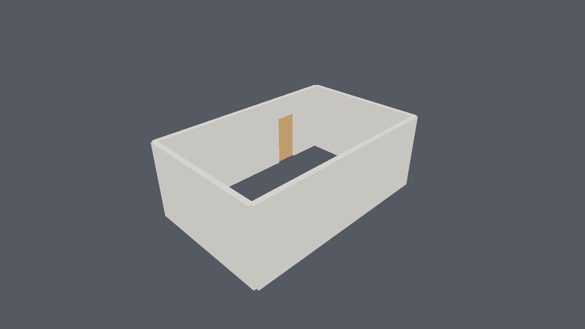
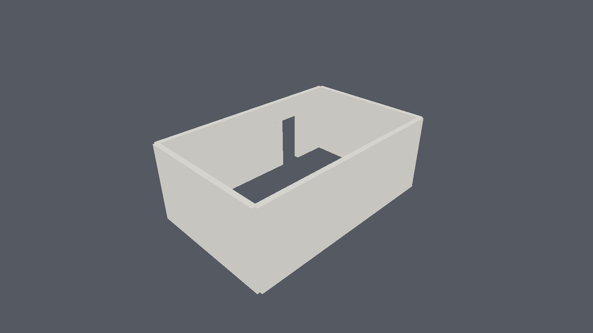

Why it exists
Every serious new BIM authoring tool in 2026 — Motif, Arcol, Qonic, Snaptrude, Forma — is cloud/browser-first and closed. Every open one is desktop-only. Nobody ships a native, offline-capable, openBIM authoring application that runs on a tablet as well as a workstation, and nothing in the open AEC ecosystem has a family system at all.
Shapr3D proved the native-plus-tablet posture works commercially in mechanical CAD. Nobody has done it for AEC. That is the gap.
It draws


In the first frame the doorway is invisible because the leaf fills its own opening to within the 10 mm frame clearance — correct, but it proves nothing. Hide the door and the cut has to be there.
What is measured
Exported IFC4 is checked against the reference implementation, not just against itself:
every relationship resolves, geometry generates for every element from the swept solids
alone, and every GlobalId survives a round trip.
Three decisions that shape everything
No webview for the viewport
WebGPU is absent from WKWebView and Android WebView, which would cap 3D at WebGL2 on three of four target platforms. The viewport is a native wgpu surface.
No B-rep kernel
There is no production-grade pure-Rust one. Fornjot ended without reaching its goals. Geometry is a deterministic parametric recipe; the mesh is a disposable cache.
The family system is the product
Typed parameters, named types, a recipe DAG, host behaviour. Placing a door expands
into a real IfcOpeningElement, IfcRelVoidsElement, and
IfcRelFillsElement.
Nine architecture decision records carry the evidence, the costs, and what would make each one wrong.
Try it
git clone https://github.com/ibuilder/CADForge
cd CADForge
cargo test --workspace
cargo run -p cadforge-shell --features gpu
The demo authors four walls through commands, defines a parametric door family, places it
as a hosted opening, cuts the wall, renders to out/demo.png, exports valid
IFC4, undoes the entire session to an empty model, and redoes it.
Where it is going
| Phase | State | |
|---|---|---|
| Foundation | complete | Decisions, workspace, tests |
| Core model | complete | Commands with exact inverses, revisions, undo |
| IFC out | complete | Native IFC4 writer, externally validated |
| IFC in | complete | 23/23 corpus files round-trip intact |
| Renderer | complete | Headless wgpu on real hardware |
| Viewport | planned | winit window, GPU picking, section planes |
| Authoring tools | planned | Wall, slab, column, beam, opening |
| Mobile | planned | Android first, then iOS |
The honest blocker is a test corpus. Everything round-tripped so far was written by
CADForge itself, which says nothing about a consultant's Revit export with duplicate
GlobalIds and geometry that fails to generate.
Full roadmap →